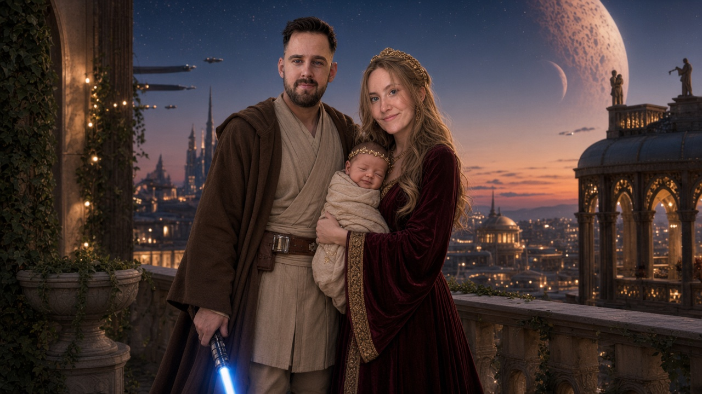

De echo heeft gesproken
Een mini-prinses
Het wordt een meisje

De Raad van Tantes had gelijk. De lichte kant wint dit keer. Welkom, kleine prinses.
Bekijk opnieuwDe echo heeft gesproken
Het wordt een meisje

De Raad van Tantes had gelijk. De lichte kant wint dit keer. Welkom, kleine prinses.
Bekijk opnieuw